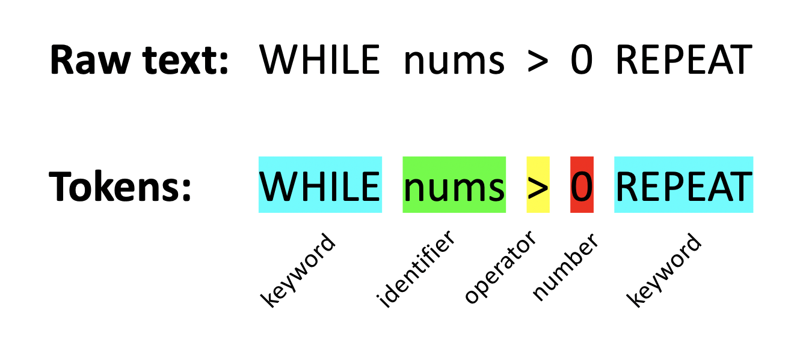
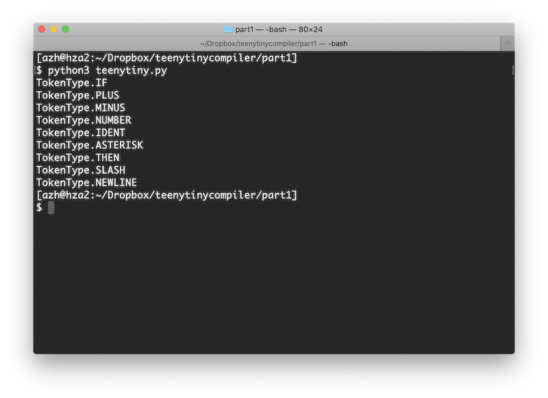

I work on AI + dev tools.
This is the first post in a three part series. Check out part 2 and part 3 when you are ready.
It is a beautiful day outside, so let's make a compiler. You don't need any knowledge of how compilers work to follow along. We are going to use Python to implement our own programming language, Teeny Tiny, that will compile to C code. It will take about 500 lines of code and provide the initial infrastructure needed to customize and extend the compiler into your own billion dollar production-ready compiler.
This tutorial is a series of posts that go step by step in building a working compiler. All of the source code can be found in the GitHub repo. If you follow along with all the posts, I guesstimate that it will take you only a few hours.
The Teeny Tiny language we are going to implement is a dialect of BASIC. The syntax is clean and simple. If you prefer a C-like syntax then it will be trivial to modify the compiler at the end. Here is an example program in our Teeny Tiny language:
PRINT "How many fibonacci numbers do you want?"
INPUT nums
LET a = 0
LET b = 1
WHILE nums > 0 REPEAT
PRINT a
LET c = a + b
LET a = b
LET b = c
LET nums = nums - 1
ENDWHILE
This program prints out terms of the fibonacci sequence based on the user's input: 0 1 1 2 3 5 8 13...
Our language will allow a variety of the basic operations that you'd expect from a programming language. In particular, it will support:
Although this is a standard subset of features, you may notice that there are no functions, no arrays, no way to read/write from a file, and not even an else statement. But with just this small set of constructs, you can actually do a lot. It will also setup the compiler in such a way that many other features will be straight forward to add later.
Our compiler will follow a three step process that is illustrated above. First, given the inputted source code, it will break the code up into tokens. These are like words and punctuation in English. Second, it will parse the tokens to make sure they are in an order that is allowed in our language. Just like English sentences follow specific structures of verbs and nouns. Third, it will emit the C code that our language will translate to.
We will use these three steps as the main organization for our code. The lexer, parser, and emitter will each have their own Python code file. This tutorial is broken up into 3 parts based on these steps as well. If you were to extend the compiler, there are some additional steps you would add, but we will hold off on discussing those.
The first module of our compiler is called the lexer. Given a string of Teeny Tiny code, it will iterate character by character to do two things: decide where each token starts/stops and what type of token it is. If the lexer is unable to do this, then it will report an error for an invalid token.
The figure demonstrates an example input and output of the lexer. Given the Teeny Tiny code, the lexer must determine where the tokens are along with the type (e.g., keyword). You can see that spaces aren't recognized as tokens, but the lexer will use them as one way to know when a token ends.
Let's finally get into some code, starting with the structure of the lexer in the file lex.py:
class Lexer:
def __init__(self, source):
pass
# Process the next character.
def nextChar(self):
pass
# Return the lookahead character.
def peek(self):
pass
# Invalid token found, print error message and exit.
def abort(self, message):
pass
# Skip whitespace except newlines, which we will use to indicate the end of a statement.
def skipWhitespace(self):
pass
# Skip comments in the code.
def skipComment(self):
pass
# Return the next token.
def getToken(self):
pass
I like to sketch out all the functions that I think I will need, then go back and fill them in. The function getToken will be the meat of the lexer. It will be called each time the compiler is ready for the next token and it will do the work of classifying tokens. nextChar and peek are helper functions for looking at the next character. skipWhitespace consumes the spaces and tabs that we don't care about. abort is what we will use to report an invalid token.
The lexer needs to keep track of the current position in the input string and the character at that position. We will initialize these in the constructor:
def __init__(self, source):
self.source = source + '\n' # Source code to lex as a string. Append a newline to simplify lexing/parsing the last token/statement.
self.curChar = '' # Current character in the string.
self.curPos = -1 # Current position in the string.
self.nextChar()
The lexer needs the input code and we append a newline to it (this just simplifies some checks later on). curChar is what the lexer will constantly check to decide what kind of token it is. Why not just do source[curPos]? Because that would litter the code with bounds checking. Instead we do this in nextChar:
# Process the next character.
def nextChar(self):
self.curPos += 1
if self.curPos >= len(self.source):
self.curChar = '\0' # EOF
else:
self.curChar = self.source[self.curPos]
This increments the lexer's current position and updates the current character. If we reach the end of the input, set the character to the end-of-file marker. This is the only place we will modify curPos and curChar. But sometimes we want to look ahead to the next character without updating curPos:
# Return the lookahead character.
def peek(self):
if self.curPos + 1 >= len(self.source):
return '\0'
return self.source[self.curPos+1]
We should make sure these functions work. Let's test them by create a new file teenytiny.py:
from lex import * def main(): source = "LET foobar = 123" lexer = Lexer(source) while lexer.peek() != '\0': print(lexer.curChar) lexer.nextChar() main()
Run this and the output should be every character of the input string, LET foobar = 123, on a new line:
L E T f o o b a r = 1 2 3
But we don't just want characters, we want tokens! We need to plan how combining individual characters together makes a token, which works much like a state machine. Here are the main lexer rules for the Teeny Tiny language:
Next we will start our getToken function in our Lexer class:
# Return the next token.
def getToken(self):
# Check the first character of this token to see if we can decide what it is.
# If it is a multiple character operator (e.g., !=), number, identifier, or keyword then we will process the rest.
if self.curChar == '+':
pass # Plus token.
elif self.curChar == '-':
pass # Minus token.
elif self.curChar == '*':
pass # Asterisk token.
elif self.curChar == '/':
pass # Slash token.
elif self.curChar == '\n':
pass # Newline token.
elif self.curChar == '\0':
pass # EOF token.
else:
# Unknown token!
pass
self.nextChar()
This will detect a few possible tokens, but doesn't do anything useful yet. What we need next is a Token class to keep track of what type of token it is and the exact text from the code. Place this in lex.py for now:
# Token contains the original text and the type of token.
class Token:
def __init__(self, tokenText, tokenKind):
self.text = tokenText # The token's actual text. Used for identifiers, strings, and numbers.
self.kind = tokenKind # The TokenType that this token is classified as.
To specify what type a token is, we will create the TokenType class as an enum. It looks long, but it just specifies every possible token our language allows. Add import enum to the top of lex.py and add this class:
# TokenType is our enum for all the types of tokens. class TokenType(enum.Enum): EOF = -1 NEWLINE = 0 NUMBER = 1 IDENT = 2 STRING = 3 # Keywords. LABEL = 101 GOTO = 102 PRINT = 103 INPUT = 104 LET = 105 IF = 106 THEN = 107 ENDIF = 108 WHILE = 109 REPEAT = 110 ENDWHILE = 111 # Operators. EQ = 201 PLUS = 202 MINUS = 203 ASTERISK = 204 SLASH = 205 EQEQ = 206 NOTEQ = 207 LT = 208 LTEQ = 209 GT = 210 GTEQ = 211
Now we can expand getToken to actually do something when it detects a specific token:
# Return the next token.
def getToken(self):
token = None
# Check the first character of this token to see if we can decide what it is.
# If it is a multiple character operator (e.g., !=), number, identifier, or keyword then we will process the rest.
if self.curChar == '+':
token = Token(self.curChar, TokenType.PLUS)
elif self.curChar == '-':
token = Token(self.curChar, TokenType.MINUS)
elif self.curChar == '*':
token = Token(self.curChar, TokenType.ASTERISK)
elif self.curChar == '/':
token = Token(self.curChar, TokenType.SLASH)
elif self.curChar == '\n':
token = Token(self.curChar, TokenType.NEWLINE)
elif self.curChar == '\0':
token = Token('', TokenType.EOF)
else:
# Unknown token!
pass
self.nextChar()
return token
This code sets up the lexer to detect the basic arithmetic operators along with new lines and the end of file marker. The else clause is for capturing everything that won't be allowed.
Let's change main to see whether this works or not so far:
def main():
source = "+- */"
lexer = Lexer(source)
token = lexer.getToken()
while token.kind != TokenType.EOF:
print(token.kind)
token = lexer.getToken()
If you run this, you should see something like:
TokenType.PLUS TokenType.MINUS Traceback (most recent call last): File "e:/projects/teenytiny/part1/teenytiny.py", line 12, inmain() File "e:/projects/teenytiny/part1/teenytiny.py", line 8, in main while token.kind != TokenType.EOF: AttributeError: 'NoneType' object has no attribute 'kind'
Uhoh! Something went wrong. The only way getToken returns None is if the else branch is taken. We should handle this a little better. Add import sys to the top of lex.py and define the abort function like:
# Invalid token found, print error message and exit.
def abort(self, message):
sys.exit("Lexing error. " + message)
And replace the else in getToken with:
else:
# Unknown token!
self.abort("Unknown token: " + self.curChar)
Now run the program again...
TokenType.PLUS TokenType.MINUS Lexing error. Unknown token:
There is still an issue, but now we can make a little more sense of it. It looks like something went wrong after the first two tokens. The unknown token is invisible. Looking back at the input string, you may notice we aren't handling whitespace! We need to implement the skipWhitespace function:
# Skip whitespace except newlines, which we will use to indicate the end of a statement.
def skipWhitespace(self):
while self.curChar == ' ' or self.curChar == '\t' or self.curChar == '\r':
self.nextChar()
Now put self.skipWhitespace() as the first line of getToken. Run the program and you should see the output:
TokenType.PLUS TokenType.MINUS TokenType.ASTERISK TokenType.SLASH TokenType.NEWLINE
Progress!
At this point, we can move on to lexing the operators that are made up of two characters, such as == and >=. All of these operators will be lexed in the same fashion: check the first character, then peek at the second character to see what it is before deciding what to do. Add this after the elif for the SLASH token in getToken:
elif self.curChar == '=':
# Check whether this token is = or ==
if self.peek() == '=':
lastChar = self.curChar
self.nextChar()
token = Token(lastChar + self.curChar, TokenType.EQEQ)
else:
token = Token(self.curChar, TokenType.EQ)
Using the peek function allows us to look at what the next character will be without discarding the curChar. Here is the code for the remaining operators which work the same way:
elif self.curChar == '>':
# Check whether this is token is > or >=
if self.peek() == '=':
lastChar = self.curChar
self.nextChar()
token = Token(lastChar + self.curChar, TokenType.GTEQ)
else:
token = Token(self.curChar, TokenType.GT)
elif self.curChar == '<':
# Check whether this is token is < or <=
if self.peek() == '=':
lastChar = self.curChar
self.nextChar()
token = Token(lastChar + self.curChar, TokenType.LTEQ)
else:
token = Token(self.curChar, TokenType.LT)
elif self.curChar == '!':
if self.peek() == '=':
lastChar = self.curChar
self.nextChar()
token = Token(lastChar + self.curChar, TokenType.NOTEQ)
else:
self.abort("Expected !=, got !" + self.peek())
The only operator that is a bit different is !=. That is because the ! character is not valid on its own, so it must be followed by =. The other characters are valid on their own, but the lexer is greedy and will accept it as one of the multi-character operators if possible.
We can test these operators by updating the input to "+- */ >>= = !=" which should give you the following output when you run the program:
TokenType.PLUS TokenType.MINUS TokenType.ASTERISK TokenType.SLASH TokenType.GT TokenType.GTEQ TokenType.EQ TokenType.NOTEQ TokenType.NEWLINE
The program now accepts all of the language's operators. So what is left? We need to add support for comments, strings, numbers, identifiers, and keywords. Let's work through these one by one and test as we go.
The # character will indicate the start of a comment. Whenever the lexer sees it, we know to ignore all the text after it until a newline. Comments are not tokens, but the lexer will discard all this text so that it can find the next thing we care about. It is also important that we don't throw away the newline at the end of the comment since that is its own token and may still be needed. Fill in skipComment:
# Skip comments in the code.
def skipComment(self):
if self.curChar == '#':
while self.curChar != '\n':
self.nextChar()
Easy enough! Now call it from nextToken, such that the first few lines of the function look like:
# Return the next token.
def getToken(self):
self.skipWhitespace()
self.skipComment()
token = None
...
Test it out with the input "+- # This is a comment!\n */" and you should see:
TokenType.PLUS TokenType.MINUS TokenType.NEWLINE TokenType.ASTERISK TokenType.SLASH TokenType.NEWLINE
Notice that the comment is completely ignored!
Our language supports printing a string, which starts with a double quotation mark and continues until another quotation mark. We won't allow some special characters to make it easier to compile to C later on. Add the following code to getToken's big block of else if statements:
elif self.curChar == '\"':
# Get characters between quotations.
self.nextChar()
startPos = self.curPos
while self.curChar != '\"':
# Don't allow special characters in the string. No escape characters, newlines, tabs, or %.
# We will be using C's printf on this string.
if self.curChar == '\r' or self.curChar == '\n' or self.curChar == '\t' or self.curChar == '\\' or self.curChar == '%':
self.abort("Illegal character in string.")
self.nextChar()
tokText = self.source[startPos : self.curPos] # Get the substring.
token = Token(tokText, TokenType.STRING)
You'll see the code is just a while loop that continues until the second quotation mark. It'll abort with an error message if any of the invalid characters are found. Something different from the other tokens we have covered so far: we set the token's text to the content of the string (minus the quotation marks).
Update the input again with "+- \"This is a string\" # This is a comment!\n */" and run the program:
TokenType.PLUS TokenType.MINUS TokenType.STRING TokenType.NEWLINE TokenType.ASTERISK TokenType.SLASH TokenType.NEWLINE
Moving right along to numbers. Our language defines a number as one or more digits (0-9) followed by an optional decimal point that must be followed by at least one digit. So 48 and 3.14 are allowed but .9 and 1. are not allowed. We will use the peek function again to look ahead one character. Similar to the string token, we keep track of the start and end points of the numbers so that we can set the token's text to the actual number.
elif self.curChar.isdigit():
# Leading character is a digit, so this must be a number.
# Get all consecutive digits and decimal if there is one.
startPos = self.curPos
while self.peek().isdigit():
self.nextChar()
if self.peek() == '.': # Decimal!
self.nextChar()
# Must have at least one digit after decimal.
if not self.peek().isdigit():
# Error!
self.abort("Illegal character in number.")
while self.peek().isdigit():
self.nextChar()
tokText = self.source[startPos : self.curPos + 1] # Get the substring.
token = Token(tokText, TokenType.NUMBER)
Test it out with the input "+-123 9.8654*/" and you should see:
TokenType.PLUS TokenType.MINUS TokenType.NUMBER TokenType.NUMBER TokenType.ASTERISK TokenType.SLASH TokenType.NEWLINE
Great, we are almost done with the lexer!
The last big thing is to handle identifiers and keywords. The rules for an identifier is anything that starts with a alphabetic characters followed by zero or more alphanumeric characters. But before we call it a TokenType.IDENT, we have to make sure it isn't one of our keywords. Add this to getToken:
elif self.curChar.isalpha():
# Leading character is a letter, so this must be an identifier or a keyword.
# Get all consecutive alpha numeric characters.
startPos = self.curPos
while self.peek().isalnum():
self.nextChar()
# Check if the token is in the list of keywords.
tokText = self.source[startPos : self.curPos + 1] # Get the substring.
keyword = Token.checkIfKeyword(tokText)
if keyword == None: # Identifier
token = Token(tokText, TokenType.IDENT)
else: # Keyword
token = Token(tokText, keyword)
Fairly similar to the other tokens. But we need to define checkIfKeyword in the Token class:
@staticmethod
def checkIfKeyword(tokenText):
for kind in TokenType:
# Relies on all keyword enum values being 1XX.
if kind.name == tokenText and kind.value >= 100 and kind.value < 200:
return kind
return None
This just checks whether the token is in the list of keywords, which we have arbitrarily set to having 101-199 as their enum values.
Alright, test identifiers and keywords with the input string "IF+-123 foo*THEN/"
TokenType.IF TokenType.PLUS TokenType.MINUS TokenType.NUMBER TokenType.IDENT TokenType.ASTERISK TokenType.THEN TokenType.SLASH TokenType.NEWLINE
And what the output looks like from the terminal:
There we have it. Our lexer can correctly identify every token that our language needs! We have successfully completed the first module of our compiler.
If you think this is underwhelming, don't give up yet! I think the lexer is actually the most tedious yet least interesting part of compilers. Next up we will parse the code, that is make sure the tokens are in an order that makes sense, and then we will emit code.
The source code so far can be found in its entirety in the Github repo.
Continue on to part 2 of this tutorial. Other recommended reading: